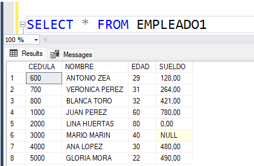
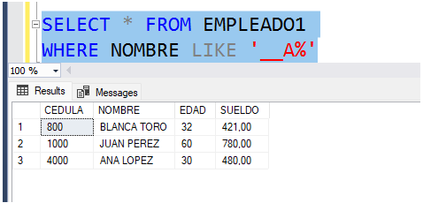
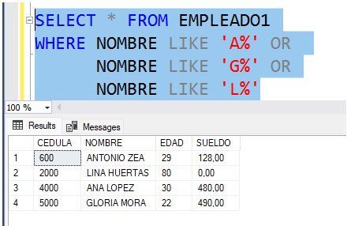
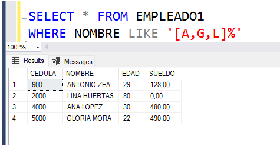
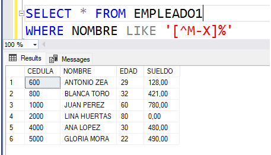
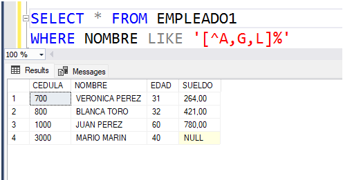

|
Fuente. https://estradawebgroup.com/Post/-Que-es-SQL-Like-y-para-que-sirve-/4274 |
El caracter comodín más conocido para ser utilizado con la cláusula LIKE es el %, el cual significa 0, uno o más caracteres cualquiera. Pero no es el único comodín que existe. En este módulo se abordan otros comodines útiles para ser utilizados con la cláusula LIKE. |
Sea la siguiente una tabla con datos de empleados de una compañía:

Suponer que se desea consultar los datos de los empleados cuyo nombre tenga la letra A en la tercera posición(la primera posición de un string es la uno). Esta consulta se hace con la siguiente instrucción:

Como se puede observar, se utiliza un nuevo comodín, el guión bajo (_). En el ejemplo, dentro del LIKE hay dos guiones bajos, la letra A y el comodín %. Esto significa que debe seleccionar los nombres cuyos primeros dos caracteres sean cualquiera, el tercer caracter sea la letra A, y esté seguida de cualquier cadena de caracteres. Se observa que tanto Blanca, Juan y Ana tienen una a en la tercera posición.
Se concluye con esto que el comodín guion bajo (_) significa UNO y solo UN caracter cualquiera.
Por otra parte, consideremos que se desea consultar los datos de los empleados cuya primera letra del nombre sea A, G o L. ESta consulta se podría hacer de dos maneras distintas:

En esta solución se tiene la utilización del comodín %.
La otra manera de hacer la consulta es:

Aparece en escena un nuevo comodín (en realidad, dos): [ ]. Estos corchetes permiten enunciar dos cosas: una lista de posibles valores, o un rango de valores. En este caso, los corchetes indican una lista de posibles valores, es decir, consultar los empleados cuya primera letra del nombre sea A, G o L y que esté seguido de cualquier cadena de caracteres.
A continuación abordemos un ejemplo donde los corchetes permiten enunciar un rango de valores. Consultar los datos de los empleados cuyo nombre comience por una letra entre M y X. Se puede observar que la consulta debe sacar como resultado a Mario Marín y Verónica Pérez. La consulta se hace de la siguiente manera:

Con el guion (-) dentro de los corchetes ([ ]) se puede especificar un rango de datos. En este caso, empleados cuya primera letra del nombre esté entre M y X (M,N,O,P,Q,R,S,T,U,V,W,X).
Es de aclarar que todos los comodines anteriores también funcionan con datos de tipo numérico.
Existe otro comodín que es la negación de los valores que hay dentro de los corchetes. Este comodín es ^.
Para entender este comodín, considerar la siguiente instrucción y su respectivo resultado:

En este caso, se estan consultando los empleados cuya primera letra del nombre NO esté entre M y X, no sale Mario Marin ni Verónica Pérez.
Ahora considerar la siguiente instrucción:

La anterior instrucción consulta los empleados cuya primera letra del nombre NO sea ni A ni G ni L.
Como conslusión, los siguientes son los comodines que se pueden usar con la cláusula LIKE:
| COMODIN | SIGNIFICADO |
| % | Cero, uno o más caracteres cualquiera |
| _ | Uno y solo un caracter cualquiera |
| [val, val1, val2.....] | Lista de posibles valores |
| [val - val1] | Rango de posibles valores |
| [^...... ] | Negación de lo que hay en los [ ] |
Video: